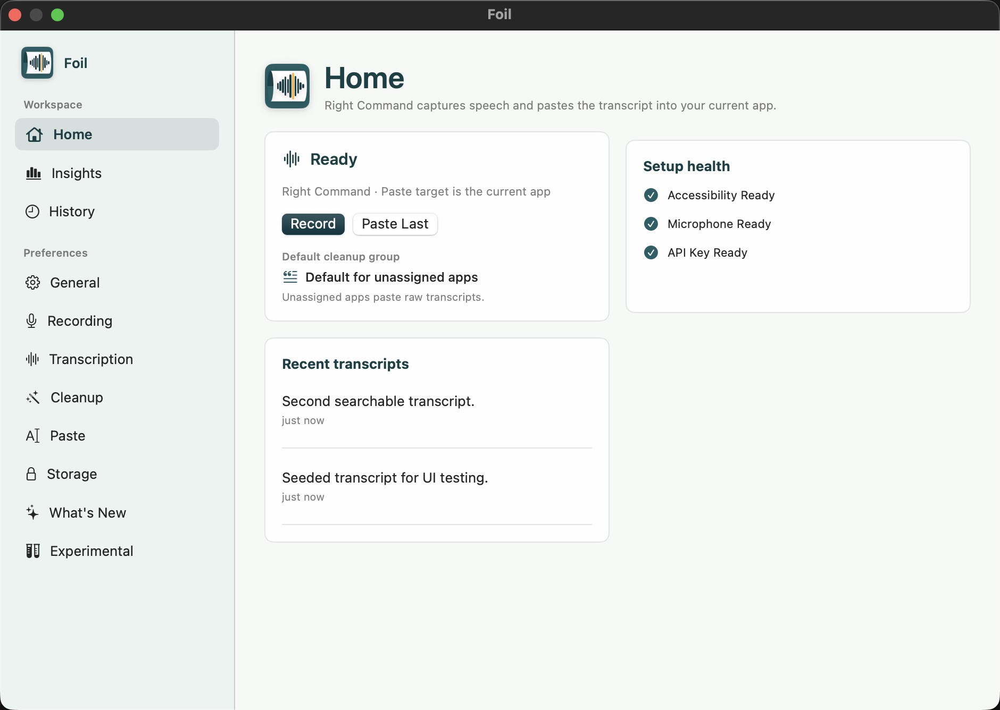

Human
Polished
Could we move our sync to 3 PM?
 Foil
FoilThe same words need different treatment for people, agents, notes, and recovery.


Could we move our sync to 3 PM?
move sync 3pm; send notes after
Follow-up notes, ready to paste.
Saved, searchable, retryable.
I’ll send the notes afterward so everyone has the follow-up.
move sync 3pm; send notes after; include follow-up
Raw for agents. Polished for people. Structured for docs. Recoverable when macOS gets picky.